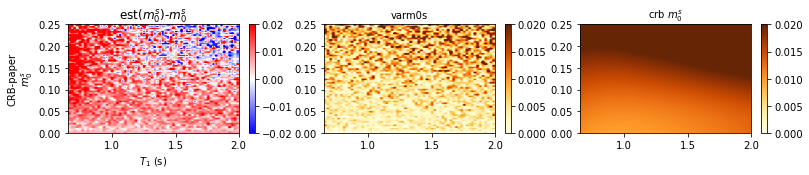
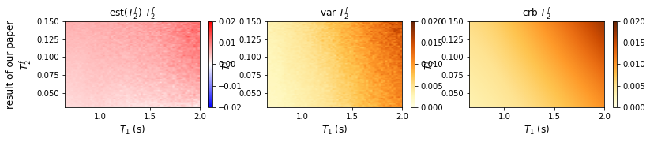

Testing on grids¶
[1]:
import os
from os import listdir
from os.path import isfile, join
import importlib
from IPython.display import clear_output
import numpy as np
import torch
import seaborn as sns
import matplotlib.pyplot as plt
import os
import scipy as sc
import pickle
import sys
depth = '../'
for i in range(7):
sys.path.append(i*depth)
from MRF.Training_parameters import *
from MRF.BaseModel import *
from MRF.Projection import *
from MRF.models import *
import MRF
from MRF.Offline import Network, Data_class, Performances
import matplotlib.image as mpimg
clear_output()
import torch
plt.rcParams["axes.grid"] = False
root = 6*depth
1) Loading basis for projection and settings parameters¶
[2]:
u=sc.io.loadmat(root+'paper_data/basis_for_compress.mat')['u']
grid = 64
font = 10
font_large=12
R=13
noise_level=1/200
PD_mag = 100*noise_level
2) Loading grids¶
[3]:
#grid 64
root64 = '../test_grid64/'
#m0s T1
finger_name = 'fingerprints_m0sT1.mat'
crb_name = 'CRBs_m0sT1.mat'
param_name = 'params_m0sT1.mat'
fingerprints_ori64_m0sT1 = sc.io.loadmat(root64+finger_name)['fingerprints']
params64_m0sT1 = sc.io.loadmat(root64+param_name)['params']
CRBs_ori64_m0sT1 = sc.io.loadmat(root64+crb_name)['CRBs']
#T1 T2f
finger_name = 'fingerprints_T1T2f.mat'
crb_name = 'CRBs_T1T2f.mat'
param_name = 'params_T1T2f.mat'
fingerprints_ori64_T1T2f = sc.io.loadmat(root64+finger_name)['fingerprints']
params64_T1T2f = sc.io.loadmat(root64+param_name)['params']
CRBs_ori64_T1T2f = sc.io.loadmat(root64+crb_name)['CRBs']
3) Functions computing estimates on grids¶
[11]:
########### all result analysis functions
#m0s T1 testgrid
def m0s_T1_test_grid(fingerprints,params,CRBs_original,save_path,model_name,model,noise_level=0.01,epo='',PD_mag=0.5,grid=64):
save_root= save_path+'/'+model_name
if not os.path.exists(save_root):
os.makedirs(save_root)
parametersm0s = []
parameterst1 = []
parameterst2 = []
with open(root+'settings_files_offline/settings_'+ model_name+'.pkl', 'rb') as f:
settings = pickle.load(f)
settings['namepca'] = root+'paper_data/basis_for_compress.mat'
net = torch.load(join(root+'save_networks_offline','network_'+model_name+str(epo)),map_location='cpu')
training_parameters = Training_parameters(settings['batch_size'], 1, settings['nb_epochs'], settings['params'], settings['normalization'], settings['complex'])
projection = Projection(settings['start_by_projection'], settings['dimension_projection'], settings['initialization'], settings['normalization'], settings['namepca'], settings['complex'])
data_class = Data_class(training_parameters, settings['noise_type'], settings['noise_level'],
settings['minPD'], settings['maxPD'], settings['nb_files'], settings['path_files'])
validation_settings = {'validation': settings['validation'],'small_validation_size': settings['small_validation_size'], 'validation_size': settings['validation_size']}
netw = model.model(projection=projection,nb_params=len(settings['params']))
device = torch.device('cpu')
netw.load_state_dict(net['NN'])
netw.to(device)
netw.eval()
with torch.no_grad():
for k in range(200):
vec = fingerprints
# PD scale complex
PD = (PD_mag) * np.exp(1j * 2 * np.pi * np.random.uniform(0,1,fingerprints.shape[0]))
PD_real = PD.real
PD_imag = PD.imag
PD = np.stack([PD_real,PD_imag],1)
PD_real = np.tile(PD_real.reshape((-1, 1)), (1, vec.shape[1]))
PD_imag = np.tile(PD_imag.reshape((-1, 1)), (1, vec.shape[1]))
if len(vec.shape)==3:
vec_real = vec[:,:,0] * PD_real - vec[:,:,1]*PD_imag
vec_imag = vec[:, :, 1] * PD_real + vec[:, :, 0] * PD_imag
vec = np.stack([vec_real, vec_imag], axis=2) # (b, timepoints, 2)
else:
vec_real = vec * PD_real
vec_imag = vec * PD_imag
vec = np.stack([vec_real, vec_imag], axis=2) # (b, timepoints, 2)
fingers = vec
PD = PD.reshape(-1, 2) # (b,2)
PD_norm = PD[:,0]**2 + PD[:,1]**2
PD_norm = PD_norm.reshape(-1,1)
# add noise
for i in range(fingers.shape[0]):
noi = np.random.normal(0,noise_level,(R,2))
fingers[i,:,:] += noi
fingerprints_tmpt = torch.tensor(fingers, dtype=torch.float).to(device)
prms = netw(fingerprints_tmpt)
prms = np.array(prms.cpu())
# record the three parameter
pars = prms
for ii, para in enumerate(settings['params']):
if settings['loss'][para] == 'MSE-Log':
pars[:, ii] = 10 ** pars[:, ii]
parametersm0s.append(np.array(pars[:, 0]))
parameterst1.append(np.array(pars[:, 1]))
# we used PD_mag=0.5 here
CRBs = CRBs_original/np.tile(PD_norm, (1, 3))
CRBs = CRBs*noise_level ** 2
m0s = np.mean(parametersm0s, axis=0)
bias_m0s = m0s- params[:,0]
relabias_m0s = bias_m0s/params[:,0]
varm0s = np.std(parametersm0s, axis=0) ** 2
T1 = np.mean(parameterst1, axis=0)
bias_T1 = T1-params[:,1]
relabias_T1 = bias_T1/params[:,1]
varT1 = np.std(parameterst1, axis=0) ** 2
temp = [i*grid for i in range(grid)]
tickt1 = [round(params[i,0],4) for i in temp]
temp2 = [i for i in range(grid)]
tickt2 = [round(params[i,1],4) for i in temp2]
# this is for the loss divide by the number of repeating test
savename=os.path.join(save_root, 'm0sT1.mat')
sc.io.savemat(savename, {'m0s': tickt1,
'crbm0s': CRBs[:,0].reshape(grid,grid),
'varm0s': varm0s.reshape(grid,grid),
'biasm0s':bias_m0s.reshape(grid,grid),
'relabiasm0s':relabias_m0s.reshape(grid,grid),
'T1': tickt2,
'crbT1': CRBs[:,1].reshape(grid,grid),
'varT1': varT1.reshape(grid,grid),
'biasT1':bias_T1.reshape(grid,grid),
'relabiasT1':relabias_T1.reshape(grid,grid),
})
print(savename)
[12]:
#T1 T2f testgrid
def T1_T2f_test_grid(fingerprints,params,CRBs_original,save_path,model_name,model,noise_level=0.01,epo='',PD_mag=0.5,grid=64):
# noise_level=0.005
save_root= save_path+model_name
if not os.path.exists(save_root):
os.makedirs(save_root)
params = np.array(params).reshape(-1,8)
bias_res = np.zeros((params.shape[0],3))
variance_res = np.zeros((params.shape[0],3))
parametersm0s = []
parameterst1 = []
parameterst2 = []
with open(root+'settings_files_offline/settings_'+ model_name+'.pkl', 'rb') as f:
settings = pickle.load(f)
settings['namepca'] = root+'paper_data/basis_for_compress.mat'
net = torch.load(join(root+'save_networks_offline','network_'+model_name+str(epo)),map_location='cpu')
training_parameters = Training_parameters(settings['batch_size'], 1, settings['nb_epochs'], settings['params'], settings['normalization'], settings['complex'])
projection = Projection(settings['start_by_projection'], settings['dimension_projection'], settings['initialization'], settings['normalization'], settings['namepca'], settings['complex'])
data_class = Data_class(training_parameters, settings['noise_type'], settings['noise_level'],
settings['minPD'], settings['maxPD'], settings['nb_files'], settings['path_files'])
validation_settings = {'validation': settings['validation'],'small_validation_size': settings['small_validation_size'], 'validation_size': settings['validation_size']}
netw = model.model(projection=projection,nb_params=len(settings['params']))
device = torch.device('cpu')
netw.load_state_dict(net['NN'])
netw.to(device)
netw.eval()
with torch.no_grad():
for k in range(150):
vec = fingerprints
# PD scale complex
PD = (PD_mag) * np.exp(1j * 2 * np.pi * np.random.uniform(0,1,vec.shape[0]))
PD_real = PD.real
PD_imag = PD.imag
PD = np.stack([PD_real,PD_imag],1)
PD_real = np.tile(PD_real.reshape((-1, 1)), (1, vec.shape[1]))
PD_imag = np.tile(PD_imag.reshape((-1, 1)), (1, vec.shape[1]))
if len(vec.shape)==3:
vec_real = vec[:,:,0] * PD_real - vec[:,:,1]*PD_imag
vec_imag = vec[:, :, 1] * PD_real + vec[:, :, 0] * PD_imag
vec = np.stack([vec_real, vec_imag], axis=2) # (b, timepoints, 2)
else:
vec_real = vec * PD_real
vec_imag = vec * PD_imag
vec = np.stack([vec_real, vec_imag], axis=2) # (b, timepoints, 2)
fingers = vec
PD = PD.reshape(-1, 2) # (b,2)
PD_norm = PD[:,0]**2 + PD[:,1]**2
PD_norm = PD_norm.reshape(-1,1)
# add noise
for i in range(fingers.shape[0]):
noi = np.random.normal(0,noise_level,(R,2))
fingers[i,:,:] += noi
fingerprints_tmpt = torch.tensor(fingers, dtype=torch.float).to(device)
prms = netw(fingerprints_tmpt)
prms = np.array(prms.cpu())
# record the three parameter
pars = prms
for ii, para in enumerate(settings['params']):
if settings['loss'][para] == 'MSE-Log':
pars[:, ii] = 10 ** pars[:, ii]
parametersm0s.append(np.array(pars[:, 0]))
parameterst1.append(np.array(pars[:, 1]))
parameterst2.append(np.array(pars[:, 2]))
# We used PD_mag=0.5 here
CRBs = CRBs_original/np.tile(PD_norm, (1, 3))
CRBs = CRBs*noise_level ** 2
m0s = np.mean(parametersm0s, axis=0)
bias_m0s = m0s- params[:,0]
varm0s = np.std(parametersm0s, axis=0) ** 2
T1 = np.mean(parameterst1, axis=0)
bias_T1 = T1-params[:,1]
relabias_T1 = bias_T1/params[:,1]
varT1 = np.std(parameterst1, axis=0) ** 2
T2 = np.mean(parameterst2, axis=0)
bias_T2 = T2-params[:,2]
relabias_T2 = bias_T2/params[:,2] # T2/params[:,2] -1
varT2 = np.std(parameterst2, axis=0) ** 2
temp = [i*grid for i in range(grid)]
tickt1 = [round(params[i,1],4) for i in temp]
temp2 = [i for i in range(grid)]
tickt2 = [round(params[i,2],4) for i in temp2]
# this is for the loss divide by the number of repeating test
print('done validation test:'+model_name)
savename=os.path.join(save_root, 'T1T2f.mat')
print(savename)
sc.io.savemat(savename, {'T1': tickt1,
'crbT1': CRBs[:,1].reshape(grid,grid),
'varT1': varT1.reshape(grid,grid),
'biasT1':bias_T1.reshape(grid,grid),
'relabiasT1':relabias_T1.reshape(grid,grid),
'T2f': tickt2,
'crbT2f': CRBs[:,2].reshape(grid,grid),
'varT2f': varT2.reshape(grid,grid),
'biasT2f':bias_T2.reshape(grid,grid),
'relabiasT2f':relabias_T2.reshape(grid,grid),
})
4) Functions showing results¶
[13]:
def plot_testgrid_m0s(data,title,row = 1,col = 3,bais_cmap='bwr',crb_cmap='YlOrBr'):
##==================T1 m0s================
font_small=10
font=12
n=1
accuracy=0.02
ax = plt.figure(figsize=(13,2))
ax=plt.subplot(row, col, n)
im=data['biasm0s']
T1=data['T1']
m0s=data['m0s']
c = ax.imshow(im, origin='lower', extent=[np.min(T1), np.max(T1), np.min(m0s), np.max(m0s)], cmap=bais_cmap, vmin=-accuracy,
vmax=accuracy, aspect="auto")
ax.set_xlabel('$T_1$ (s)', fontsize=font_small)
ax.set_ylabel(title+'\n'+'$m_0^s$', fontsize=font_small)
plt.title('est($m_0^s$)-$m_0^s$', fontsize=font)
plt.colorbar(c)
n=n+1
#variance
accuracy=0.02
ax=plt.subplot(row, col, n)
im=data['varm0s']
c = ax.imshow(np.sqrt(im), origin='lower', extent=[np.min(T1), np.max(T1), np.min(m0s), np.max(m0s)], cmap=crb_cmap, vmin=0,
vmax=accuracy, aspect="auto")
plt.title('varm0s', fontsize=10)
plt.colorbar(c)
n=n+1
#crb
ax=plt.subplot(row, col, n)
im=data['crbm0s']
c = ax.imshow(np.sqrt(im), origin='lower', extent=[np.min(T1), np.max(T1), np.min(m0s), np.max(m0s)], cmap=crb_cmap, vmin=0,
vmax=accuracy, aspect="auto")
plt.title('crb $m_0^s$', fontsize=10)
plt.colorbar(c)
n=n+1
def plot_testgrid_T1(data,title,row = 1,col = 3,bais_cmap='bwr',crb_cmap='YlOrBr'):
font_small=10
font=12
ax = plt.figure(figsize=(13,2))
n=1
ax=plt.subplot(row, col, n)
accuracy=0.3
im=data['biasT1']
T1=data['T1']
T2f=data['T2f']
c = ax.imshow(im, origin='lower', extent=[np.min(T2f), np.max(T2f), np.min(T1), np.max(T1)], cmap=bais_cmap, vmin=-accuracy,
vmax=accuracy, aspect="auto")
ax.set_xlabel('$T_2^f$ (s)', fontsize=font_small)
ax.set_ylabel(title+'\n'+'$T_1$', fontsize=font_small)
plt.title('est($T_1$)-$T_1$', fontsize=font)
plt.colorbar(c)
n=n+1
#variance T1
accuracy=0.3
ax=plt.subplot(row, col, n)
im=data['varT1']
c = ax.imshow(np.sqrt(im), origin='lower', extent=[np.min(T2f), np.max(T2f), np.min(T1), np.max(T1)], cmap=crb_cmap, vmin=0,
vmax=accuracy, aspect="auto")
plt.title('varT1', fontsize=10)
plt.colorbar(c)
n=n+1
#crb T1
ax=plt.subplot(row, col, n)
im=data['crbT1']
c = ax.imshow(np.sqrt(im), origin='lower', extent=[np.min(T2f), np.max(T2f), np.min(T1), np.max(T1)], cmap=crb_cmap, vmin=0,
vmax=accuracy, aspect="auto")
plt.title('crb $T_1$', fontsize=10)
plt.colorbar(c)
n=n+1
def plot_testgrid_T2(data,title,row = 1,col = 3,bais_cmap='bwr',crb_cmap='YlOrBr'):
font_small=10
font=12
ax = plt.figure(figsize=(13,2))
#ax.suptitle('Main title')
n=1
im=data['biasT2f']
T1=data['T1']
T2f=data['T2f']
ax=plt.subplot(row, col, n)
accuracy=0.02
c = ax.imshow(im, origin='lower', extent=[np.min(T1), np.max(T1), np.min(T2f), np.max(T2f)], cmap=bais_cmap, vmin=-accuracy,
vmax=accuracy, aspect="auto")
ax.set_xlabel('$T_1$ (s)', fontsize=font)
ax.set_ylabel(title+'\n'+'$T_2^f$', fontsize=font)
plt.title('est($T_2^f$)-$T_2^f$', fontsize=font_large)
plt.colorbar(c)
n=n+1
#variance
accuracy=0.02
im=data['varT2f']
ax=plt.subplot(row, col, n)
c = ax.imshow(np.sqrt(im), origin='lower', extent=[np.min(T1), np.max(T1), np.min(T2f), np.max(T2f)], cmap=crb_cmap, vmin=0,
vmax=accuracy, aspect="auto")
ax.set_xlabel('$T_1$ (s)', fontsize=font)
ax.set_ylabel('$T_2^f$', fontsize=font)
plt.title('var $T_2^f$', fontsize=font_large)
plt.colorbar(c)
n=n+1
#crb
im=data['crbT2f']
ax=plt.subplot(row, col, n)
c = ax.imshow(np.sqrt(im), origin='lower', extent=[np.min(T1), np.max(T1), np.min(T2f), np.max(T2f)], cmap=crb_cmap, vmin=0,
vmax=accuracy, aspect="auto")
ax.set_xlabel('$T_1$ (s)', fontsize=font)
ax.set_ylabel('$T_2^f$', fontsize=font)
plt.title('crb $T_2^f$', fontsize=font_large)
plt.colorbar(c)
n=n+1
5) An example to show results¶
[14]:
## define model names for paper
R=13
# model name
model = importlib.import_module('MRF.models.CRB-paper')
[15]:
model_name_list=['CRB-paper']
model_title_list=['CRB-paper']
[16]:
save_root='CRB-paper'
if not os.path.exists(save_root):
os.makedirs(save_root)
#(1) compute testgrid values
# m0s T1
fingerprints = np.matmul(fingerprints_ori64_m0sT1,u[:,0:R])
fingerprints = np.stack([np.real(fingerprints), np.imag(fingerprints)],axis=2)
for i in range(len(model_name_list)):
model_name = model_name_list[i]
m0s_T1_test_grid(fingerprints,params64_m0sT1,CRBs_ori64_m0sT1,save_root,model_name,model,noise_level=0.01)
# T1 T2f grid=64
fingerprints = np.matmul(fingerprints_ori64_T1T2f,u[:,0:R])
fingerprints = np.stack([np.real(fingerprints), np.imag(fingerprints)],axis=2)
for i in range(len(model_name_list)):
model_name = model_name_list[i]
T1_T2f_test_grid(fingerprints,params64_T1T2f,CRBs_ori64_T1T2f,save_root,model_name,model,noise_level=0.01)
CRB-paper/CRB-paper\m0sT1.mat
done validation test:CRB-paper
CRB-paperCRB-paper\T1T2f.mat
[ ]:
for i in range(len(model_name_list)):
model_name=model_name_list[i]
data = sc.io.loadmat(save_root+model_name_list[0]+'/'+'T1T2f.mat')
plot_testgrid_T2(data,'result of our paper')
[25]:
for i in range(len(model_name_list)):
model_name=model_name_list[i]
data = sc.io.loadmat(save_root+'/'+'m0sT1.mat')
plot_testgrid_m0s(data,model_title_list[i])
CRB-paperCRB-paper/m0sT1.mat

[23]:
for i in range(len(model_name_list)):
model_name=model_name_list[i]
data = sc.io.loadmat(save_root+model_name_list[0]+'/'+'T1T2f.mat')
plot_testgrid_T2(data,'result of our paper')
